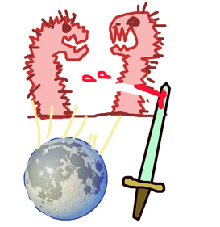

| ZEN |
ZEN is before NOW. That is a terrible pun but now you won't be able to forget it. |
|
Cut the standing worms with your sword before the full moon. Otherwise they'll turn into WERE-worms, of which the less said, the better.  |
| まえ |
before; in front of
★★★★★ |
| ( この ) まえ |
last time (i.e. "Thanks for helping me last time.")
★★★★★ |
| 午前 |
AM
★★★★★
AM , before noon. |
| 名前 | |
| お前 |
You ★★★★☆ You. Kind of rude -like a father scolding a son. Ruder than 君(きみ) but less rude than コイツ. |
| 建前 |
The way one behaves in public
★★☆☆☆
CCWKUNKUN
one's principles, one's public position. (i.e. never drinking tang, being anti-abortion) (as opposed to 本音, one's private feelings) |
|
assumption
期待 予想 前提 先入観 |
|
correct, just
当たり前 当然 適当 正しい 適切 妥当 もっともの 正に |
|
from now on, since then
以前 以来 以後 以降 きり それから 今後 |
|
name
名前 名____、姓____ 名字 氏 氏名 姓名 |
|
proceed
前進 進む |
|
sign or symptom
兆候 前兆 縁起 直感 |
 KANJIDAMAGE
KANJIDAMAGE